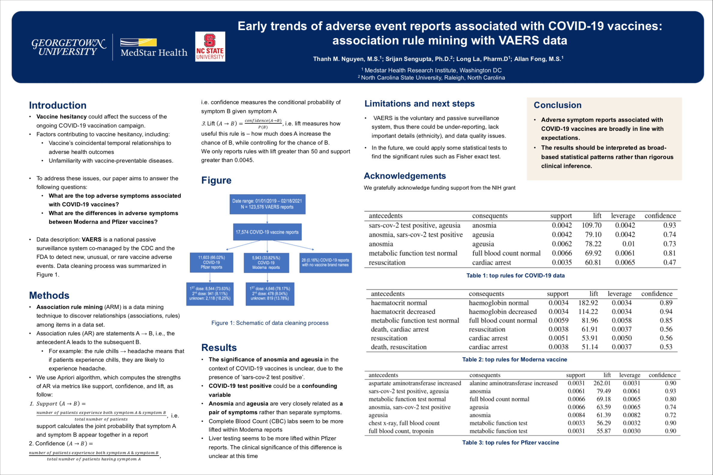

Thanh
M. Brown
Data Analyst with an M.S. in Operations Research and 5+ years working with complex clinical and genomic data at 3 academic medical centers. I combine HPC-scale pipeline engineering, observational study design, and hands-on ML to turn raw data into reproducible, publication-ready results, including co-authored peer-reviewed research.
Work
Portfolio Projects
Complex data analysis, exploratory data analysis, predictive modeling, and deployed ML applications.
01 — Healthcare ML · NLP · Temporal Validation
Predicting Clinical Trial Early Termination Risk Interactive ML application
Can a clinical trial's registration record reveal elevated termination risk before outcomes are known? Using 193,378 interventional trials from AACT (ClinicalTrials.gov), I developed an XGBoost classifier combining structured registration data with eligibility-criteria text (TF-IDF + SVD). A strict temporal split evaluates performance on future trials, with leak-prone features excluded. Results: 0.777 test ROC-AUC. The top 5% of trials by predicted risk captured 40.7% of all terminated trials. Adding text features improved test AUC by 0.024 over tabular features alone. The analysis also revealed that text-derived signals largely reflected study population characteristics, reinforcing the model's role as a risk-ranking tool—not a causal explanation.
02 — Clinical ML · Epidemiology · Python
Osteoporosis Risk — Recall Asymmetry in Matched Case-Control Data
Why do models miss cases on a perfectly balanced dataset? In a 1:1 matched cohort of 61,026 osteoporosis patients, classifiers from logistic regression and linear SVM to tree ensembles and a feed-forward neural network miss 40–49% of cases, despite exact class balance and ROC-AUCs up to 0.79. After validating the cohort by reproducing a published hyponatremia odds ratio (3.98 vs. 3.97), I use diagnostic analyses to test whether the recall gap stems from model limitations or from properties of the matched observational data.
03 — Data Pipeline Engineering - Clinical Analytics Platform
ISCVAM — Multi-Study Oncology Data Pipelines Cancer Research
Experimental scientists had no direct computational path to their own data, leaving finished experiments stuck in an analyst queue. I built the automated data layer that removed the delay: two containerized R pipelines handling end-to-end ingestion, quality control, and cell-type annotation across 198 studies (~6.3M cells). Orchestrated on Slurm job arrays with size-aware scheduling and per-step checkpointing, the pipelines convert raw sequencing output into standardized HDF5 datasets the platform reads directly. I presented the platform as first author at AACR 2023.
04 — ML App · Streamlit · Scikit-learn
Hiring Intelligence — Recruitment Outcome Predictor
End-to-end ML web app predicting candidate hiring outcomes using a tuned Gradient Boosting classifier — 94.7% precision, 93.3% ROC-AUC on 1,500 recruitment records. The web app features an EDA explorer and live candidate predictor with probability gauge and radar chart. Key finding: recruitment strategy (SHAP = 3.052) dominates all candidate-level signals — stronger than interview score, skill score, or education combined. A useful reminder that process design shapes outcomes as much as candidate quality does.
05 — FDA Data · R · Interactive App
FDA Medical Device Harm Trends — RShiny Dashboard
Built an interactive visualization app over the 2016 MAUDE (FDA medical device passive surveillance) dataset. Users explore temporal harm trends across device categories and manufacturers. Demonstrates stakeholder-facing data product design.
06 — Public Health · Unsupervised Learning
COVID-19 Vaccine Adverse Symptoms — Association Rule Mining
Mined COVID-19 adverse-event reports from VAERS (CDC/FDA) using the Apriori algorithm to surface frequent adverse-symptom patterns and compare reported events between Moderna and Pfizer. Key insight: adverse-event patterns were broadly similar across both vaccines, suggesting perceived safety differences may be driven more by reporting frequency than by fundamentally different symptom profiles.

Background
About Me
I'm a data analyst with an M.S. in Operations Research and 5+ years at academic medical centers (MedStar Health, Moffitt Cancer Center, Huntsman Cancer Institute), working with clinical EHR data, FDA safety reports, and high-dimensional genomic profiles. My work spans statistical modeling, machine learning, and large-scale data pipelines. I focus on the questions that matter before modeling: what the data can support, where bias enters, and when an association isn't enough to act on. I own the full path from raw, messy sources to reproducible results and tools that non-technical stakeholders actually use.
Core competencies
- Scale & Engineering Rigor: Engineered parallelized R/Python ETL and analysis pipelines on HPC/SLURM clusters with run-tracking checkpointing (6.3M+ cells across 198 studies).
- Methodological Depth: Paired machine learning with advanced observational study design, including matched case-control pairing, conditional logistic regression, and Rubin’s rules for multiple imputation.
- Real-World & Federal Data: Executed hands-on data retrieval, extraction, and modeling across structured and unstructured sources, including hospital EHR data, FDA MAUDE, and VAERS safety databases.
- Scientific Impact: Co-authored peer-reviewed research in top-tier journals (Clinical Cancer Research and Cancer Research) and presented first-author platform work at AACR 2023.
- Oncology Genomics: Built analysis pipelines for single-cell RNA-seq, single-cell ATAC-seq, and multiome data—covering QC, dimension reduction, clustering, and annotation with Seurat and Signac—with additional work in spatial transcriptomics and bulk sequencing.
Publications
Published under Nguyen, T. / Nguyen, T.N.
- Sriramareddy SN, …, Nguyen T, …, Smalley KSM. GDF15 reprograms the microenvironment to drive liver metastasis of uveal melanoma. Cancer Res. 2026. doi:10.1158/0008-5472.CAN-25-0536
- Li J, …, Nguyen T, …, Smalley KSM. Single cell characterization of the cellular landscape of acral melanoma identifies novel targets for immunotherapy. Clin Cancer Res. 2022. doi:10.1158/1078-0432.CCR-21-3145
Capabilities
Technical Skills
Tools I use from raw data to deployed models.
Contact